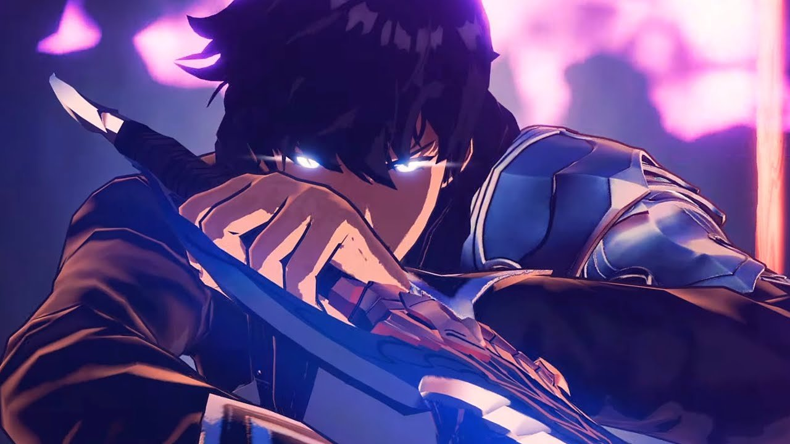
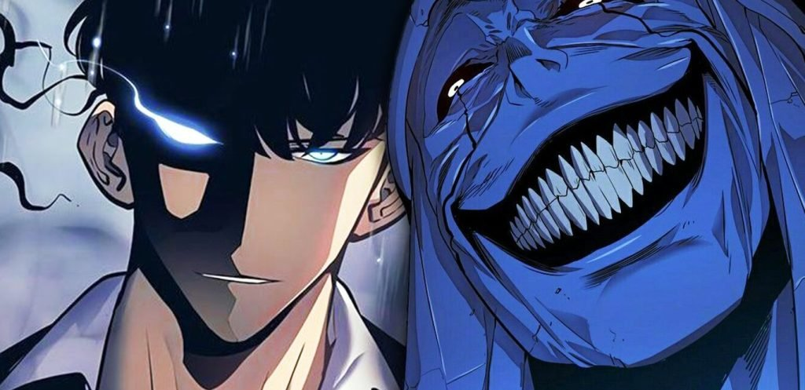
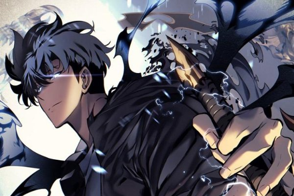
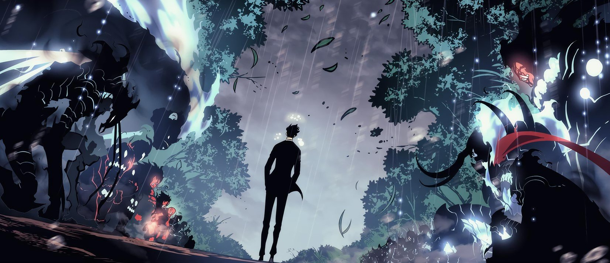

Blog
Solo Leveling: Overpowered Done Right
Published on April 17, 2024

Throughout the last few years of going in and out of Manga fandoms, people have always said "READ SOLO LEVELING" and I always hated joining the hype so I decided to wait before I touched it. Fast-forward about 1-2 years and here I am caught up to one of the most popular Manhwas of all time and for good reason too. So let's talk about it. Spoilers btw, don't say I didn't warn you.
Man, where do I even begin... I caught up to solo leveling in the span of 3 days, that's how much I was into it. At the time of this post, it's about 168 chapters in and I believe it's nearing the final arc. Solo leveling is amazing, in terms of just pure hype moments and a good progressive plot it really takes the cake. To try to summarize the plot in a short way, it's basically about a weak hunter who grows to be the strongest hunter in the world.

Our protagonist, Sung Jin-Woo starts off the journey as the weakest Rank E Hunter, taking on dungeons as a means to make money for his mother's hospital bills and his sister's college tuition. It's a pretty just cause, to be honest, but the issue is he's often labeled "The weakest hunter in the world" and often comes back from these dungeons from the brink of death or severely injured. Yet, he keeps on pushing because of the aforementioned issues in his family.
Until one day, he enters an E-ranked dungeon and it ends up being a double dungeon - a dungeon within a dungeon. Jin and his raid team enter this double dungeon without knowing what it truly was, and soon learned quickly what they had done. The dungeon was much, much stronger than E rank and pretty much wiped out his whole raid team, except for a few who got out. Jin was left alone in that dungeon to face death, but he didn't die. In fact, he woke up in the hospital with a UI that only he can see and a level meter, something similar to what you see in an RPG game. From that point, he had gone on a journey to become the strongest Hunter in existence.
I didn't want to spend too much time explaining the whole plot details like that, it's a lot to take in and absorb just in the first 5 chapters if we get into it. Rather, let's talk about Jin as a character, before he gets "chosen" to be a leveler you feel a level of sympathy for him. Being regarded as weak betrayed even due to his stature of being the weakest hunter. Yet, he has a very humane tone to him, he's just someone regular like you and me. We often see these kinds of characters depicted in popular series, like Ken Kaneki from Tokyo Ghoul.

We are given these characters to sympathize with and often feel for them. The moment they are given power, the moment they are regarded as someone significant in their respective worlds, we root for them. It's a just feeling, they deserve it in fact, as the characters are unveiled more and more we begin to see layers of their trauma, struggles, and issue further justifying our intent to root for them.
In later chapters, Jin's character begins to change into a more savage character. What I mean by this is that he no longer cares and is just badass, especially for someone who's been through it all. His character development throughout the series is something to behold because even though he's much more of a savage character now, he has interactions within his crew that still retain the kindness that make us humane.
The Manhwa is an example of character progression done right, most of the time characters often get depicted as being overpowered out of nowhere. Other series don't show the progression of the characters which doesn't allow the audience to really get attached to the character. Series like Reincarnated as a slime, Tokyo Ghoul, and Solo leveling just to name a few do a wonderful job of world-building and character progression in a way in which we can follow and be genuinely excited for the character as they go through trials and tribulations.

I mentioned world-building being a key component of good progression and that stays true within Solo Leveling because, throughout the series, there's always something that's keeping Jin from progressing. Don't get me wrong, he is incredibly overpowered but he constantly builds up to that moment. It's not like it just happens and I think that's great, it's how a power fantasy should be done.
I agree that this series is very hyped by the fans of them, but for just reasons because this series is literally amazing. I don't often feel like screaming or being so hype for moments I read, but Solo Leveling easily makes me feel like that. I love this series and I hope it gets adapted into an Anime properly one day. Also, Manhwas are GOATED for coloring the panels.